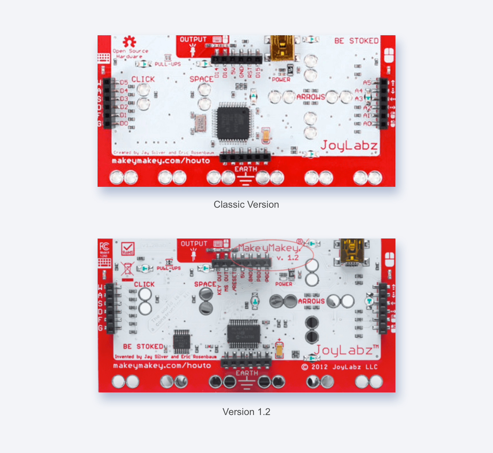

FRUITAILS
I worked with another designer and 2 developers for this project. We were interested in creating a technology that would make physical activity more fun and engaging for beginners.
I worked on the instructions screen, background assets and animation with CreateJS libraries as well as the design and implementation of the interactive mat controller.
Fruitails is a split screen catch game with an interactive mat controller created for a Tech Studio Design course. Players control the movement of two characters, with their feet, at the same time. There are four buttons on the mat used as arrow keys. LED lights are synced with all key press to indicate that the mat is responsive.
My Role
UX/UI Designer
Timeline
October - December 2016
Deliverables
Brief, Interactive Game, GitHub Tutorial
For our first Tech Studio Design project, we had the time, resources and a lot of great technology to use. Our challenge was building a proof of concept and the project flow.
We built a paper prototype of the mat with foil tape and conductive thread. This would ensure that keypress events and LED lights worked the way we wanted before having it transferred to the working prototype. For the game, we animated on the HTML5 Canvas with the zim.js and EaselJS external libraries.
Using Arduinos for keypress events would require an extra usb keyboard. We decided to use the Makey Makey board instead for its durability.
The new interface for V1.2 made the remapping process a lot simpler. However, the tutorials we needed for connecting the Makey Makey board to LED lights were for the Classic version. We decided to remap the Classic version by modifying the code using an Arduino IDE Firmware.
After successfully connecting one light using pin D14, we tried to use D16 to connect to extra lights using the same method. However, D16 is defaulted to mouse events, which is not used in our case. We solved this problem by extending GND and D14 to an external breadboard so that we can connect to multiple lights instead of using different pins on one board.
Game: Setting random falling objects within four individual columns. Controlling the falling speed and time to manage the game difficulty. Objects staying on stage after falling, slowing down the game. Overlapping apples/pears with traps (rocks), hit test sometimes not working. Set capacity for score bar to progress to next level.

While researching conductive material, we went from pressure sensors to using foil tape and conductive thread which greatly expanded the area that players can use.< It was also less costly and more durable than the other options we researched such as Velostat or conductive fabric. We got two LED lights to light up when extending keyboard pins into the breadboard.

The design of the buttons were well thought out. All the seams from the threads were hidden by sewing within the mat material. The conductive thread created a path from each button to the center of the mat, which solved our concern with having too many wires.
Extending the ‘ground’ of the Makey Makey by connecting alligator clips also did not seem to take away from the player’s experience.
Building the game itself was a collaborative task. We would witness our game break over and over again but then we would see it start to work the way it should. We also created all of the assets for the game as we saw it come to life.